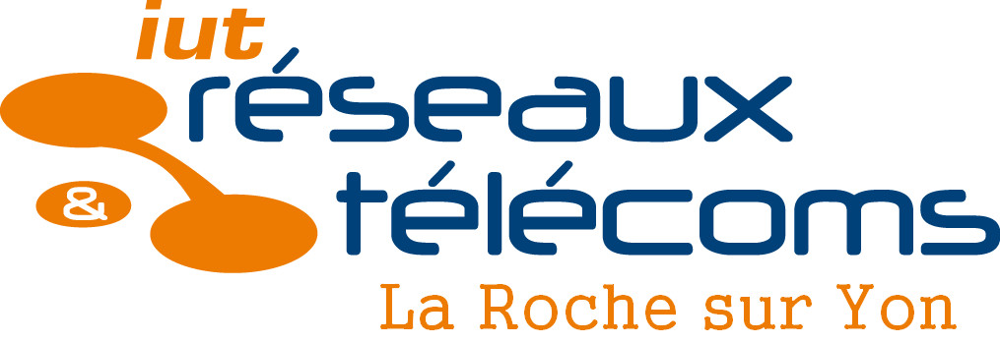

formation

BUT2 Réseaux et Télécommunications
IUT de Nantes, Campus de la Roche-sur-Yon
Projets
Réseaux & Systèmes
Création de réseaux d’entreprise avec mise en place de services fonctionnels : DHCP, serveur web et téléphonie IP.
Développement
Développement d’un jeu en C intégrant des algorithmes et la gestion de fichiers pour un fonctionnement complet.
Réalisation d’un site web full stack (HTML, CSS, JavaScript, PHP, MySQL) avec interactions client-serveur.
Création d’une application en Python simulant le fonctionnement de Putty (client SSH).
Télécommunications
Mise en place d’un système de radio FM fonctionnel.
Baccalauréat Général
Saint-Joseph Ancenis
Spécialités Mathématiques, Physique-chimie et NSI
Projets
NSI (Numérique et Sciences Informatiques)
Réalisation d’un site web simple en HTML et CSS.
Développement d’un jeu Space Invaders en Python, avec gestion des collisions, mouvements et interface graphique.
Qu'est ce que BUT Réseaux et Télécommunications?
Ma formation est souvent mélangée avec la communication, les réseaux sociaux, de par son nom "Réseaux et télécommunications". Bien que le nom soit proche, c'est complètement différent.
Dans le BUT Réseaux et Télécom, on aborde plusieurs domaines clés. Tout d'abord, il y a les réseaux, avec la conception de réseaux d'entreprise ou locaux.
On apprend à configurer des routeurs, des switches CISCO et à optimiser la gestion du trafic au sein du réseau avec différents protocoles.
Ensuite, on étudie les systèmes en utilisant des outils comme Linux et Windows, avec un focus sur leur gestion et leur administration pour garantir le bon fonctionnement des infrastructures informatiques.
Un autre aspect de la formation est la télécommunication. On y traite de la gestion des technologies sans fil et de la mise en place de solutions de transmission de données entre différents équipements (téléphones, serveurs, réseaux IP).
Enfin, le développement, avec un focus sur la création de logiciels et d’applications pour automatiser des tâches, gérer des réseaux et garantir la sécurité des données échangées.
On y retrouve du développement web, avec HTML, CSS, JavaScript, PHP, MySQL, afin de créer un site authentique avec un échange entre client et serveur.
On a pu travailler aussi le langage Python, Arduino et C. La formation touche un champ large dans l'informatique, ce qui permet de toucher à tout pour savoir ce qui nous correspond le plus et d'être polyvalent.
La première année se fait en initiale obligatoirement.Pour ma part, ma deuxième année le sera elle aussi, mais sera accompagnée d’un stage de 8 à 10 semaines. Enfin, ma troisième et dernière année se fait en alternance.
Cette formation se fait en 3 ans et il est possible d'intégrer une école d'ingénieur après, ou bien de s'arrêter et d’avoir un diplôme qui permet de rentrer dans le monde du travail. À l'heure actuelle, je ne sais pas si je vais poursuivre mes études. Si je devais continuer, je ferais sûrement un master en développement web.
Pour plus de renseignement se référer à la page officielle de l'université: